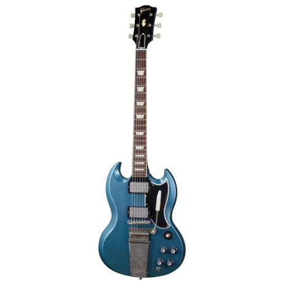
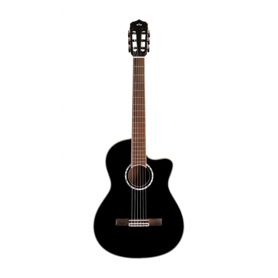
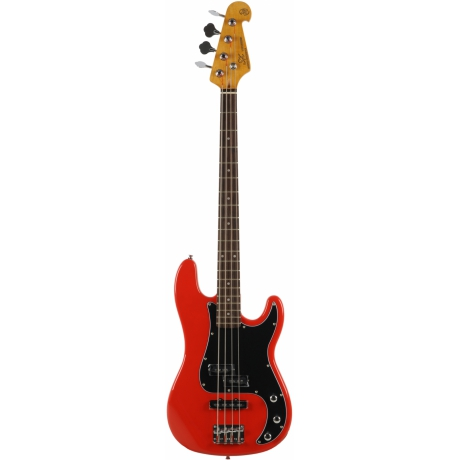
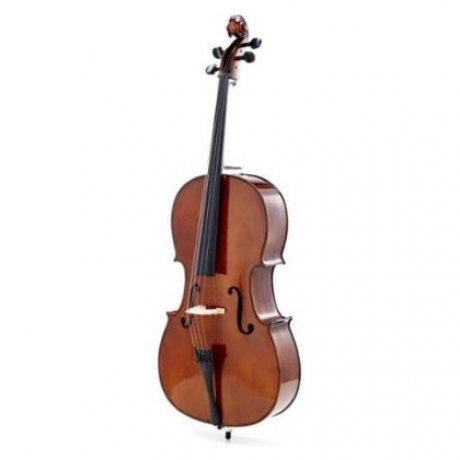
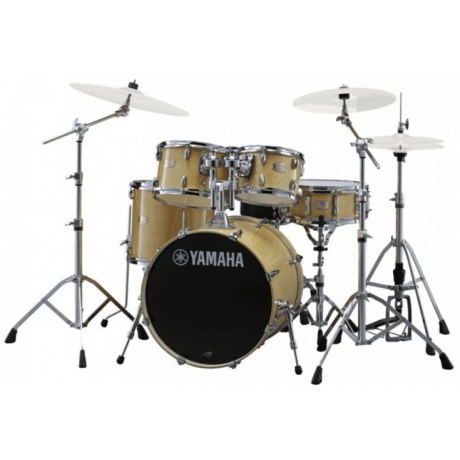
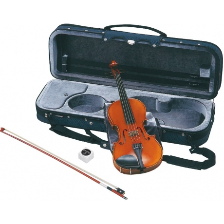
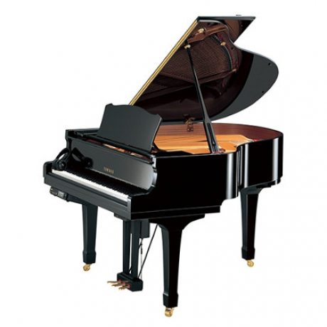
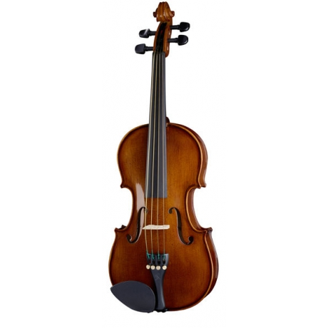

ORE MUSİC
Ana Sayfa
Ürünlerimiz
Hakkımızda
Ürünlerimiz
- 
Gibson Custom 1964 SG Standard Reissue 275,995 TL
- 
Yamaha NCX1NT Elektro Klasik Gitar (Naturel) 22,219 TL
- 
SX SPJ62 /FR Bas Gitar (Fiesta Red) 6,853 TL
- 
Stentor II 4/4 Çello (Satin Finish) 23,308 TL
- 
Yamaha Stage Custom Birch 49,109 TL
- 
Yamaha V7SG Keman Seti (4/4) 37,215 TL
- 
Zimmermann Grand Piano 959,320 TL
- 
Stentor 1505/M Student II Viyola 14,768 TL